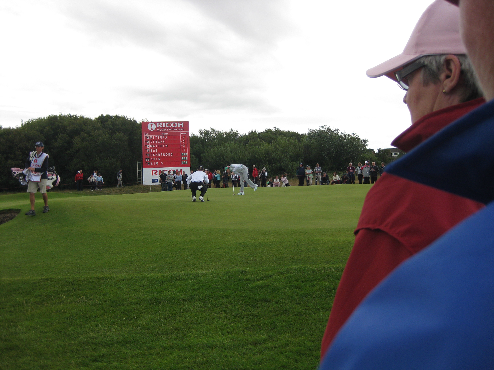
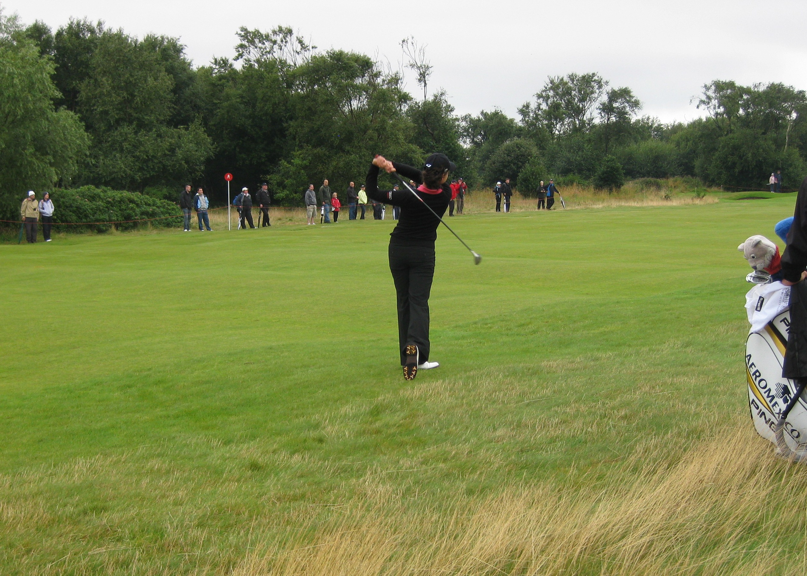

|
|
|
|
Women's British Open - Saturday August 1st -Day 3
The rain as I left meant my waterproof thermal socks were the order of the day. The wind was not as strong as on Thursday and it was a little warmer. At the course saw Kris Tamulis and caddie Larry, the 6th group of the day, on the 12th tee. I had determined that I was going to see something of the par 5 11th hole today, so set off up the 11th fairway and watched Laura Diaz and Lorena Ochoa play the hole.Lorena's tee shot ended up bang in the middle of the fairway. Diaz was over on the left of the fairway in the hollow. There was a bog standard par for Diaz, but Lorena hit her approach pin high and five feet away, and made a nice birdie. The 12th was an easier hole today with the reduced wind but neither of them managed a birdie. I made my way to the 13th green to wait for them to arrive. Lorena had a look at a birdie but although she hit a great putt it just wouldn't drop. She looked a little anxious after hitting her drive on the 14th but it was OK.
 Headed over to the 6th in time to see Momoko Ueda hoick her 2nd shot into a nasty looking spot short on the right hand side of the fairway. Terry didn't seem to think she could get a club on it sufficiently to go for the green, but she was convinced she could. She ended up in the deep left greenside bunker. Next up were Vicky Hurst and Martina Eberl. Vicky Hurst put it somehwere I'd never seen anyone end up before. She was so far right of the fairway and so long she was miles back and deep in the hay. She gave it full welly and only made it to the shorter hay at the edge of the fairway. From there she could only advance it up the fairway a bit. She got it on the green with her next but two putted for bogey. Her playing partner was not doing much better. She laid up but ended up in the deep fairway bunker. She did better than the Japanese lass the day before and got out at the first attempt but a bogey went on her card too.
{kind=link}
Spotted the Aussie lasses on the far side of the 6th fairway as Karrie Webb and Se Ri Pak approached. Mutual waving ensued. They continued on with Karrie. She made par on the 6th after hitting her approach into one of the right greenside bunkers. Soph came through to tee off on the 4th and she was already 3 over after 3 holes. Not a great start. Saw Se Ri Pak's group go through the 6th then wandered off for a cheeseburger.
Caught up with the Aussie lasses. Myranwy confirmed she wouldn't want to be a member at Royal Lytham. In fact she said if this were her local course she would take up lawn bowls. She couldnt believe how evil the bunkers were. They moved on to follow Karrie on the 12th whilst I waited for Christie Kerr to appear on 11 and then wandered over to the 6th green to see Beany play through. Then it was over to the 14th fairway to see Paula Creamer over on the right in a really nasty spot. I was actually trying to head for the crossover by the 15th tee to get back to the tented village.
As the Creamer group was on the adjacent 14th green we wern't allowed to cross over until they had teed off. Unfortunately nobody told the marshalls that Inbee Park in the group in front had hit her tee shot way right and had hit a provisional which was in a fairway bunker. They were still searching for her first ball so there was no chance of them teeing off but they still kept us standing there. Creamer went and sat on the bench they have thoughtfully provided on the 15th tee.
Once the 5 minutes were up Inbee played her provisional out into the fairway and eventually cleared the way for Creamer and Webb. There was nearly a mutiny when they announced that as Kerr's group were now on the 14th green we'd have to wait for them to tee off as well. Luckily they saw sense and let us cross once Kerr and Moromizato were on the 15th tee. Came across Jiyai Shin on the 17th tee. Her caddie handed her her driver and set off at a rate of knots back over towards the 16th. This was Shin putting in place her strange tactic of playing 17 by hitting onto the 16th fairway.
 Mika Miyazato's caddie joked with Shin that normally when a caddie quits he leaves the bag behind. Her caddie cleared Inbee Park and Maria Hjorth off the 16th fairway so they were out of the landing zone. It didn't seem to be a great strategy. Double on Thursday and bogey on both Friday and today as I saw from the giant scoreboard later.
{kind=link}
Stood by the 18th green to watch a few groups finish off. Karrie came up short on 18 on the shoulder of one of the greenside bunkers. She hit a lovely chip shot onto the green but didn't make the par putt. Watched Kerr finished off on 18 and then headed off to get myself a can of Strongbow. Saw M&M sitting watching the big screen with some red wine and went and joined them. They bought me another can as we watched Beany finish off the day with a 3 shot lead.
They weren't leaving until Monday morning so I told them I would love to have dinner with them on Sunday if they could arrange for me to park at their hotel. They said they would ask at let me know if that would be OK. Headed off back to the car park. With play being over for the day it was a much quicker trip as we could cut across the fairways wherever we liked and straight line the journey. Thought it was going to take ages to get out of the car park but they opened up the entrance as an exit and was away quite quickly.